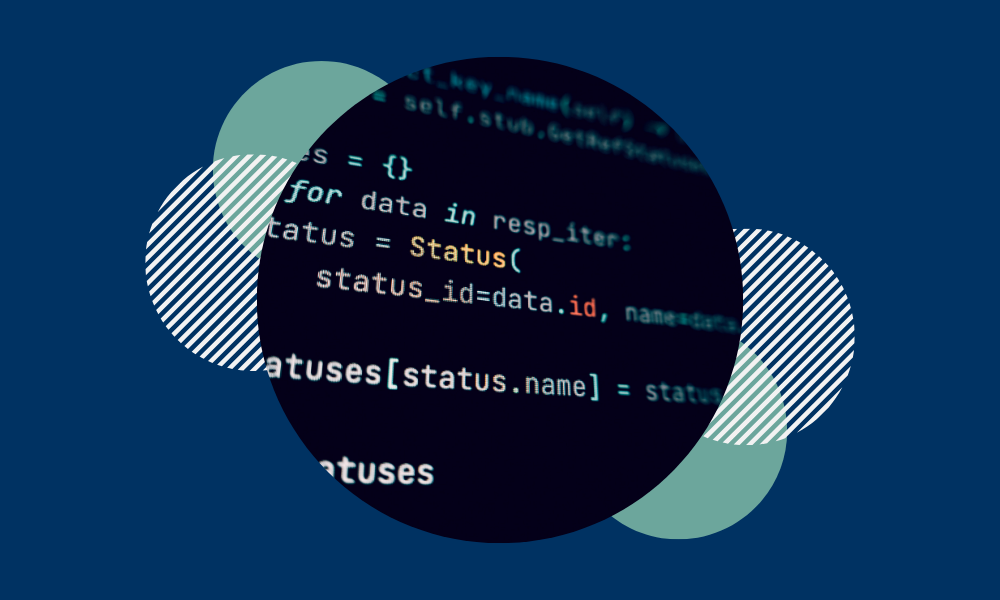

Prior to entering the University of California, Berkeley, Kevin was a student at Cleveland STEM High School in Seattle, Washington, where he was enrolled in the School of Computer Science.
There, Kevin completed an rigorous courseload comprised of nine AP® courses, eleven honors courses, and one dual enrollment course.
Kevin was also a present leader in his school's community, where he mentored classmates, formed relationships with instructors, and earned honors from his peers.
Outside of school, Kevin has been recognized for his work in literature and his dedication to culturally-responsive leadership.
Kevin is dedicated to supporting local communities through accessible and culturally-responsive means.
In particular, he is passionate about the societal implications of education, as access to education often divides society.
Beliefs, decisions, and lifetime outcomes all depend on the level of education one has access to, making access to education a greater systemic challenge to many.
As Kevin reflects on barriers to his own education in his past, he is committed to helping students from diverse neighborhoods and backgrounds gain access to accessible and culturally-relevant STEM education.

Kevin holds relevant experience in web and software development from his work in computer science, and has interest in business as well.
His previous projects have involved Java, Python, Scheme, SQL, Scala, HTML, CSS, JavaScript, A-Frame, C#, Unity Engine, IntelliJ IDEA, Docker, Visual Studio, and many more.
Aside from his portfolio, Kevin's work in software includes the UpSTREAM Program website and applications such as 30+, Spellling Bee, and One.
In his spare time, Kevin can be found writing, freelance trumpeting, and photographing diverse landscapes while he travels throughout the Pacific Coast.